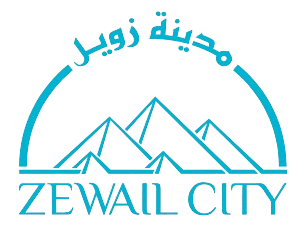

I build reliable, scalable pipelines that turn raw data into insight.
Turn data into impact.
See my projectsGet in touchI'm a Communication and Information Engineering graduate who builds ETL/ELT and real-time data pipelines with Python, SQL, PySpark and Azure.
I work with Lakehouse architecture, orchestration, data quality and CI/CD, and I care about solutions that stay reliable as data grows.

Based in Giza, Egypt.